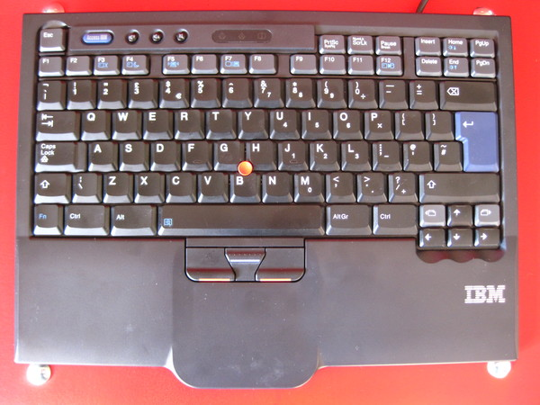
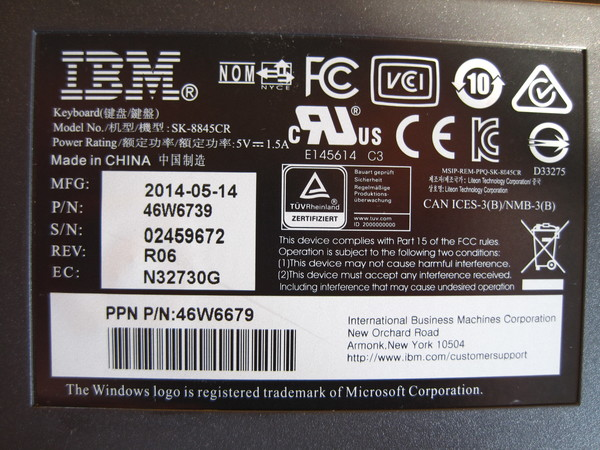

MATT THOMPSON
IBM is still making ThinkPad keyboards
Fri Oct 02 2015
This week I was doing a bit of shopping for an external keyboard for my old Thinkpad x200 laptop. I've grown used to its comfy keyboard and its trackpoint, so I looked on ebay to see if I could find one of the older external USB equivalents.
A search for "UltraNav" turned up this gem: an old-looking IBM model, with old-style keys and everything! It was pretty cheap, too, at £40. The listing described it as "brand new", which I took to mean unused or like-new condition.

Note: IBM instead of Lenovo logo. Also, no ThinkPad branding.
So it arrived, and after unpacking it, the keyboard did seem to be in brand-new condition. Suspiciously new, in fact. Strangely, it didn't have any Windows keys at all on it. So it couldn't be new, could it? Also, IBM stopped making Thinkpads and Thinkpad-style keyboards over a decade ago, selling the rights to Chinese manufacturer Lenovo. So the keyboard had to be at least that old. Didn't it?
But a look on the back of the keyboard revealed the truth: it was manufactured in May 2014! How could this be? Even weirder, it has a Windows logo copyright notice on it despite not having any Windows keys!

Label on the back of the keyboard
Looking up the driver info in Linux, it appears to be manufactured by Lite-on, who do indeed still manufacture Thinkpad parts for Lenovo. A Google search for the serial number (SK-8845CR) finds some Chinese websites selling this keyboard for use with IBM's rack mounted server. Indeed, the manual that came with the keyboard describes it as being rack-mountable.
So perhaps that's it: IBM is still making Thinkpad-style keyboards for its rack-mounted servers, possibly only in China. The keyboard doesn't actually have the Thinkpad logo anywhere on it, but it's unmistakably a Thinkpad design.
It's a really nice keyboard, much better made than the modern chiclet-key Lenovo equivalents. It feels really solid, and the keyboard is at least as good as the one on my x200. It's good to know that somewhere out there, someone at IBM is still keeping the glory days of the Thinkpad keyboard alive.
Discuss this post on Hacker News